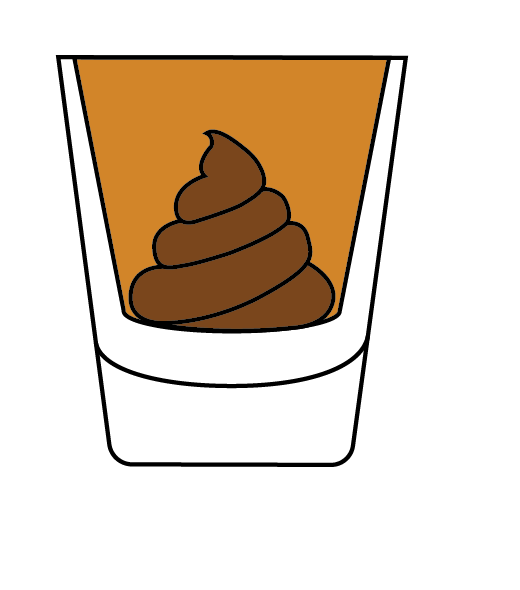
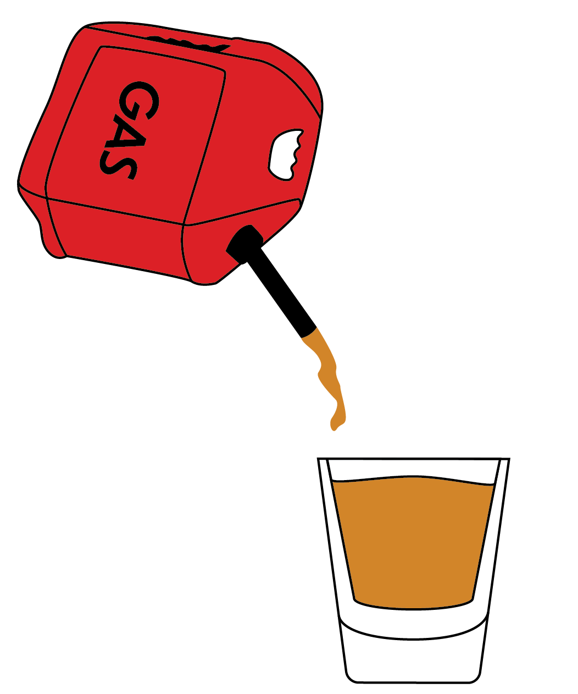
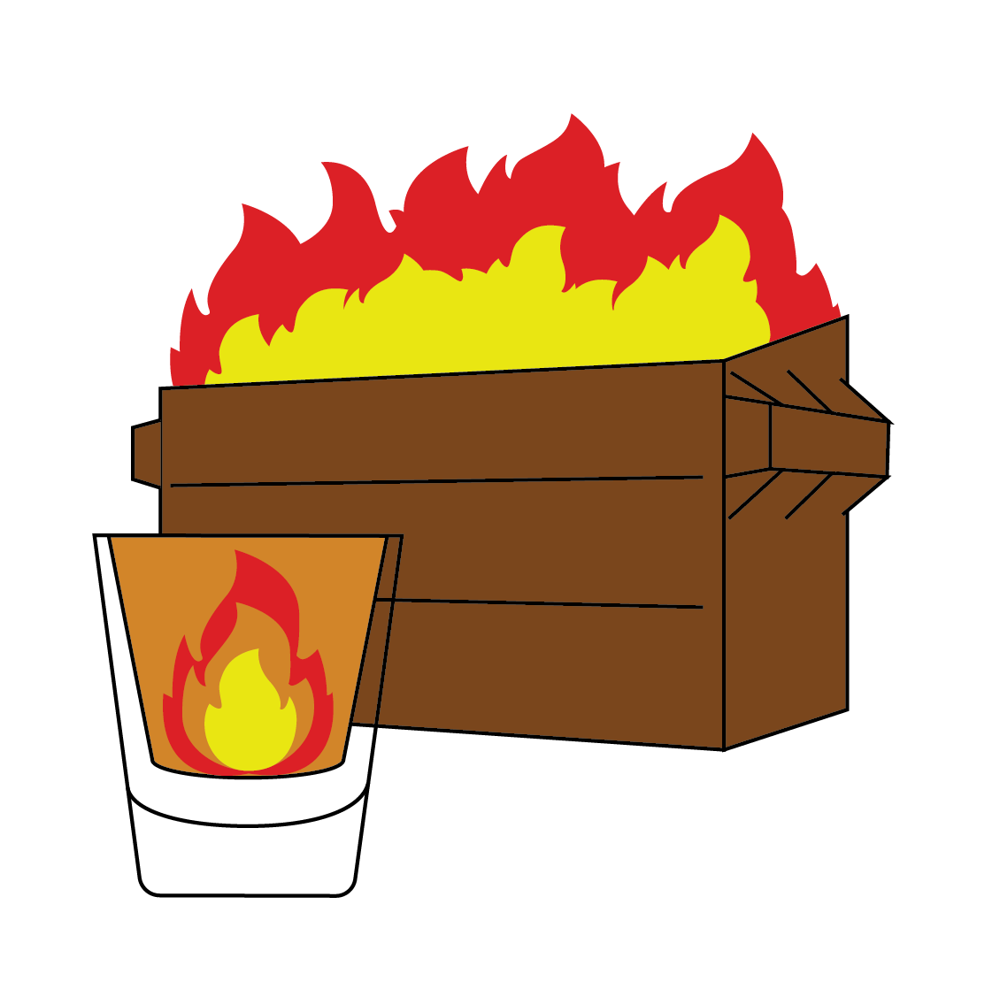
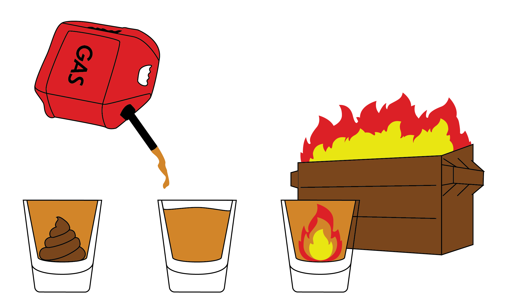

As I write this testimonial half-awake and still a little bit Malört-drunk from the night before, my stomach seems to beg for my attention, howling and pleading with me as if to say, “Please, never do this to me again. Please.” Dear Malört, why did you do this to me? What have I done to deserve this?
So, where did things go wrong? It is an important question, after all, considering in approximately three hours the coroner will be wondering the same thing. Maybe it was when I convinced my roommates to join me in “Malört shots.” Or maybe it was earlier, when I purchased the barely ingestible elixir and could tell that the man behind the counter was worried for my overall well-being. “Are you sure you want to do this?” his eyes seemed to say. Was my fate decided from that very moment? Dear reader, to understand how I got here, we have to go back nine decades, to the year 1933.
A young man named George Brode had just graduated from what is now known as the Northwestern University Pritzker School of Law, according to his 1999 obituary in The Chicago Tribune. Soon after graduating, Brode took a job at his wife’s family business, D.J. Bielzoff Products Co. Meanwhile, in Chicago, a mysterious Swede named Carl Jeppson had been selling his alcoholic Malört concoction during Prohibition under the pretense that it was a “medicinal” product, according to the “History” page on the Malört website. Legend has it that Jeppson’s tastebuds were so scorched from severe tobacco abuse that his recipe for Malört was actually one of the few things he could taste.
Shortly after the repeal of Prohibition, Bielzoff Products bought the recipe for Malört from Jeppson and began selling it as an alcoholic beverage. Although Brode later sold the company, he never parted with the rights to Malört. For decades, he marketed the beverage as only for drinkers with the strongest of stomachs, eventually bringing the product to a level of infamy in Chicago culture.
Who was this man, George Brode, who seemed to be so infatuated with such an off-putting drink? Little information is publicly available, other than that he was a genius marketer, a lawyer and a Northwestern graduate. Only after scanning the Northwestern Archives, public records and Ancestry.com did I discover what may very well be the only existing picture of George Brode.

You may be wondering, what does Malört actually taste like? In online videos, reviews and even pop culture, the taste has been compared to gasoline, pencil shavings and burnt plastic, among other more unpleasant things. My favorite description, however, comes from none other than the CEO of Malört’s parent company CH Distillery. He is known to describe it as “ass, gas and fire.” Yes, that is an exact quote. Let’s break this down, shall we?
First we have the “ass.” Upon the first few brief moments of initial consumption, when the beverage has entered the mouth and made first contact with the taste buds, we get strong hints of wormwood, a bitter herb often used to flavor drinks like absinthe. This makes sense, as wormwood is the only ingredient that the makers of Malört are willing to disclose. The initial wormwood taste is bad, but not the worst. It has an earthy, funky taste, reminiscent of a root or maybe dirt. At the very least, it tastes like something that someone with strange taste may eat. I suppose this explains the “ass.”
Next we have “gas.” This one is pretty straightforward. After swallowing the liqueur, the taste of wormwood fades into a strong, biting aftertaste which is best described as gasoline. I’ve never actually ingested gasoline (thankfully), but I have smelled it. Using my nose as a witness, I’ve concluded that this aftertaste must be the closest a human can come to sipping your Shell station’s finest petrol. It’s far worse than the initial wormwood taste, and the worst part: it doesn’t go away. The chemical aftertaste lingers uncomfortably for a good 15 minutes, just like the last guest at your house party. This is what truly causes Malört to be such an intoxicating drink. You don’t want to drink more, but instead, you want to drink something — anything — else to get this horrible taste out of your mouth. I found myself scrounging the kitchen for soda, beer and White Claw just to rid my palate of this threat.
Finally, we have “fire.” I think this description is less apt for the taste and more applicable to the overall experience. The act of drinking Malört is very much a dumpster fire. A large, unstoppable dumpster fire that spreads from one dumpster to a nearby building before eventually engulfing the whole city in catastrophic disaster. Oddly, much like an uncontrollable fire, Malört just won’t seem to go away. Even though I despised the taste, I found myself craving the beverage after this first consumption. The experience of doing Malört shots with friends, as unpleasant as it is, is strangely endearing and provides for great stories. Stories told, of course, over a nice glass of Malört on the rocks.
Would I recommend Malört? I think that question is inherently flawed. It’s like asking someone if they would recommend taking a three-hour exam or doing 100 sit-ups; the experience is not enjoyable, but it’s worthwhile. Unlike schoolwork and exercise, however, the process of drinking Malört is neither productive nor rewarding. And that’s where I think the beauty of Malört lies. It’s just another dumb, meaningless, painful experience that many — myself included — seem to love. Thank you Carl Jeppson, George Brode and the city of Chicago for introducing me to such a lovely drink — and a blistering headache that just won’t seem to go away.